2018
OCAD U SATELLITE CAMPUS
Schematic phase
An environment for safe failure, cross-pollination of ideas, and an emphasis on process over final product.
CONTEXT
ASC 520: Integration Studio, Ryerson University
LOCATION
Junction Triangle, Toronto
SOFTWARE
Revit, AutoCAD, Photoshop, Rhinoceros 3D, Illustrator
RECOGNITION
2019 DAS Year-End Show
Post-secondary institutions often emphasize the final product so strongly that students become afraid of failure. The need for success can prevent experimentation. This proposal creates an institution where safe failure and the exchange of ideas support a more innovative and creative environment.
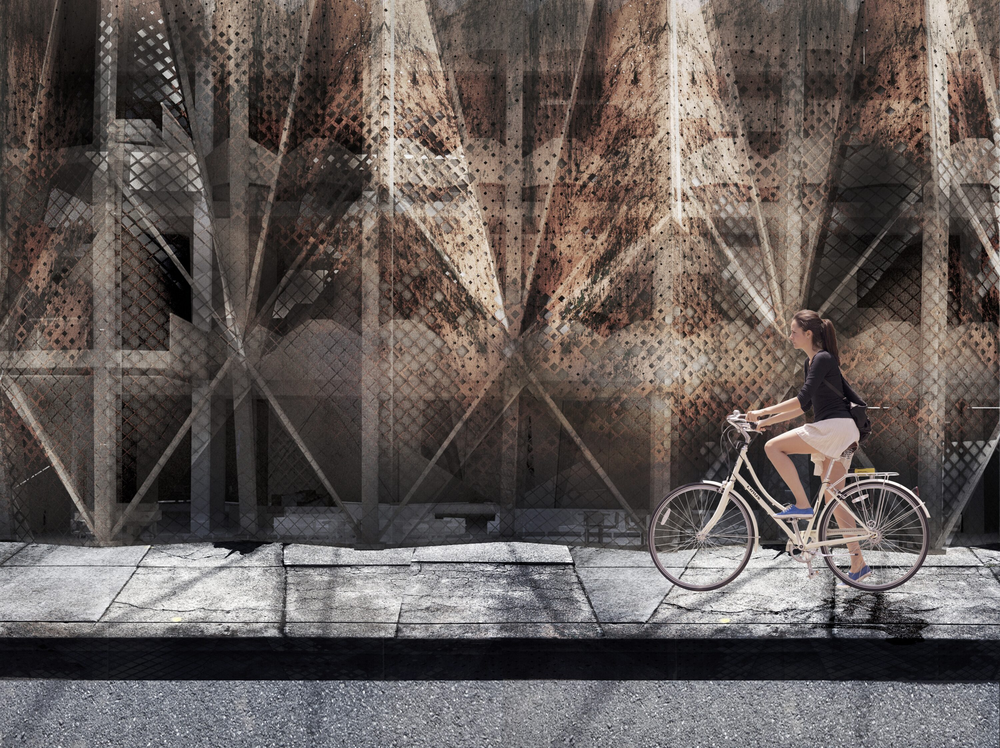
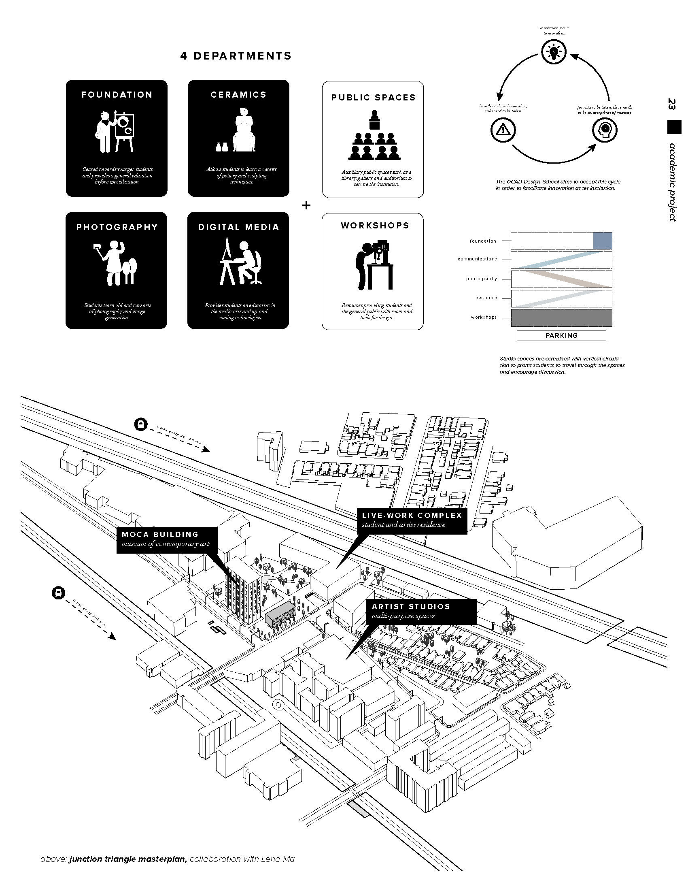
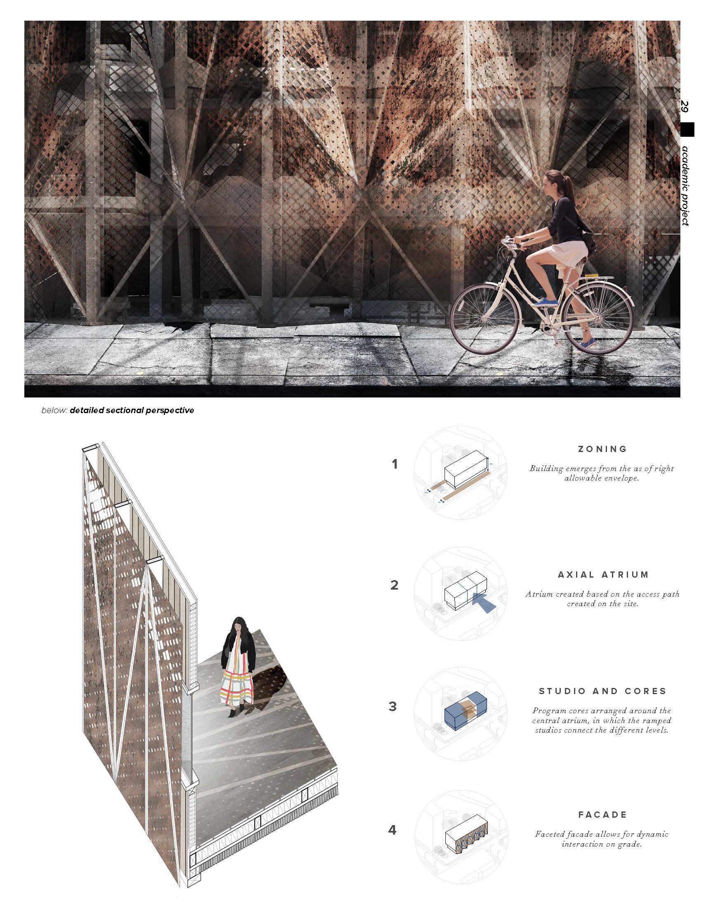
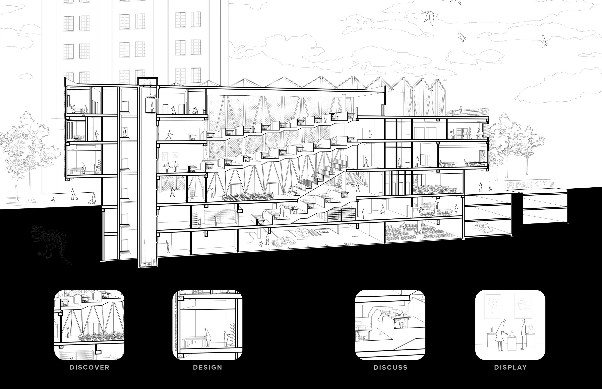
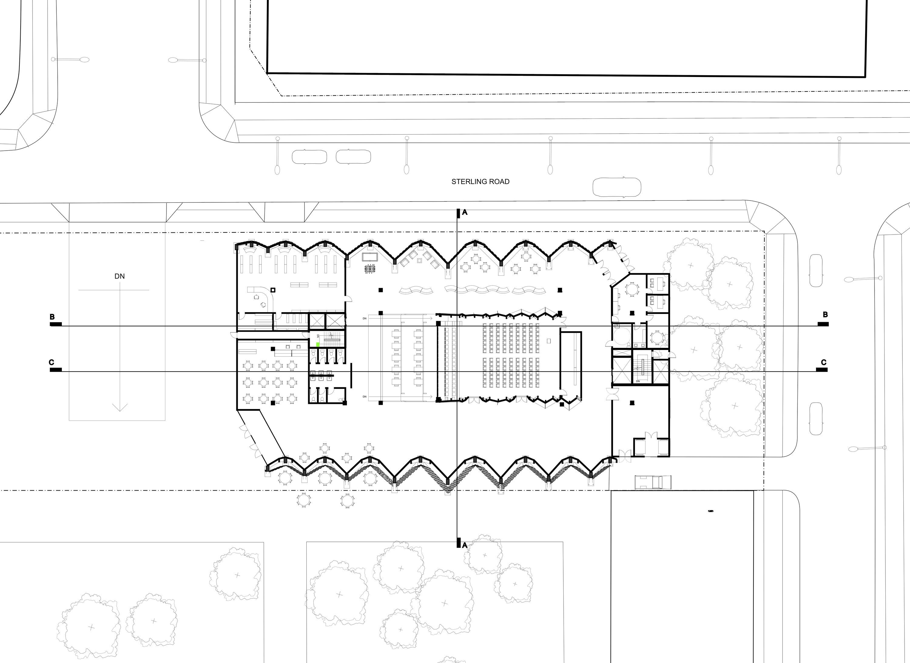
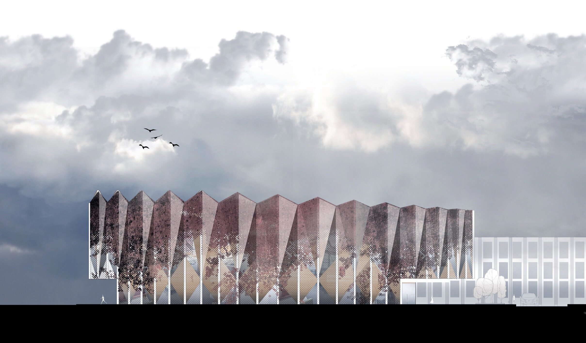
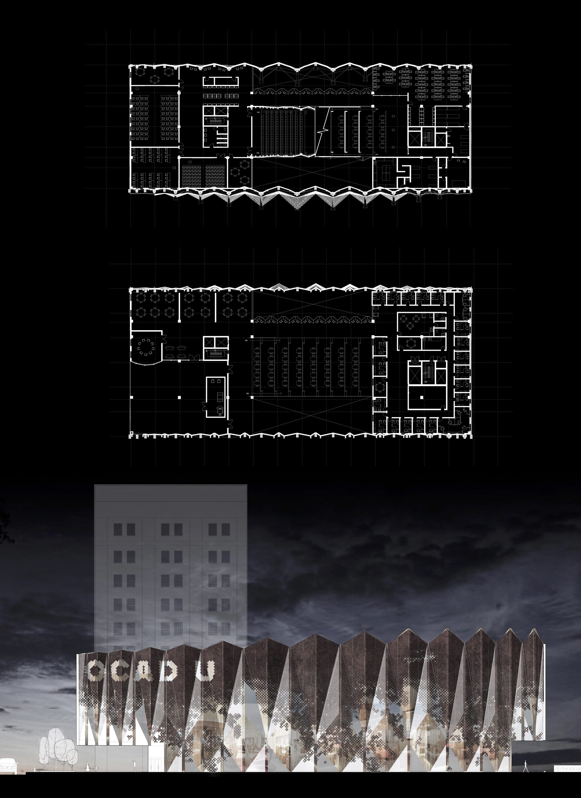
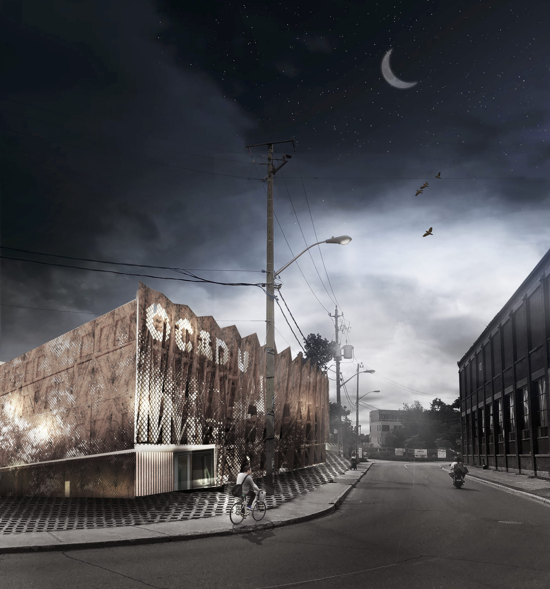
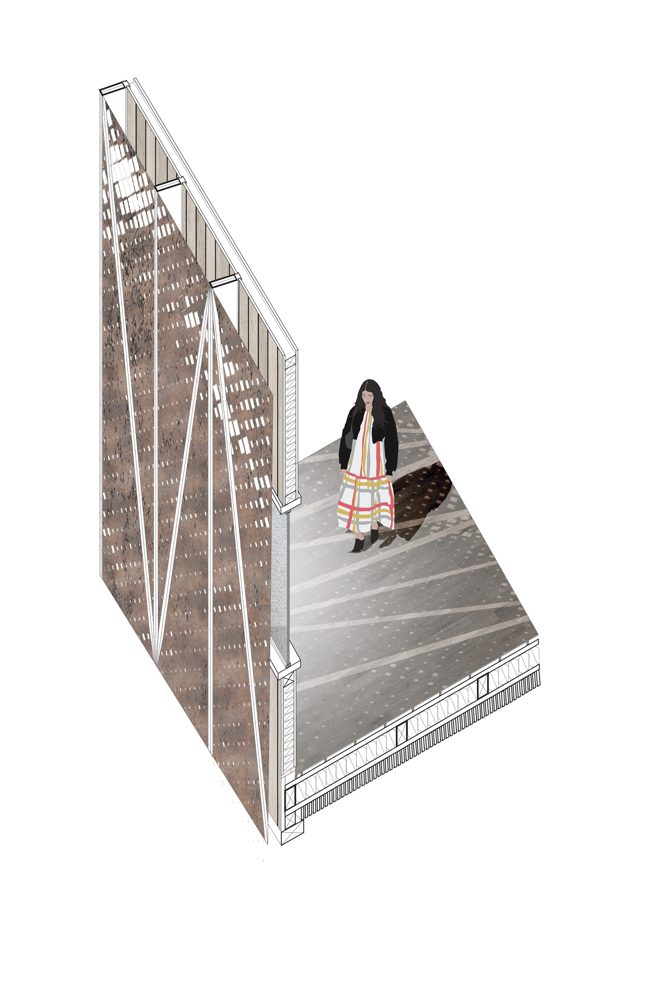
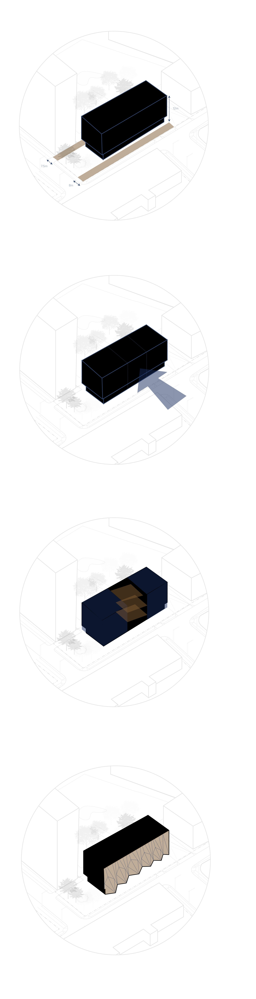
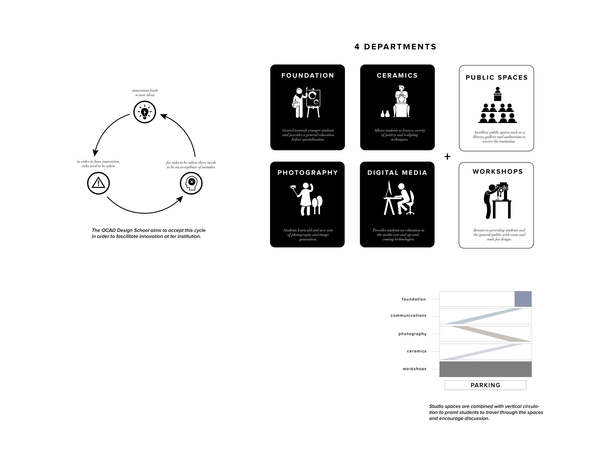